용접기사 (2016-08-21 기출문제)
1과목: 기계제작법
1. 절삭가공을 할 때 절삭온도를 측정하는 방법으로 사용하지 않는 것은
- 부식을 이용하는 방법
- 복사고은계를 이용하는 방법
- 열전대(thermo couple)에 의한 방법
- 칼로리미터(calorimeter)에 의한 방법
(정답률: 84%)

2. 다음 중 절삭가공에서 공구의 수명에 영향을 주는 절삭조건으로 가장 관계가 적은 것은?
- 절삭속도
- 절삭유제
- 공작물의 재질
- 공작물의 크기
(정답률: 86%)
3. 강선의 냉간인발 중 가공경화가 나타나서 계속적인 작업이 어려울 때 조직을 연화시키기 위하여 항온변태를 시켜서 인발 가공을 용이하게 만드는 열처리 방법은?
- 마퀜칭
- 파텐팅
- 완전 어닐링
- 스페로다이징
(정답률: 39%)
4. 단조 프레스 용량이 50kN이고, 프레스의 효율이 80%, 단조물의 유효 단면적이 500mm2인 재료를 단조하고자 할 때 단조재료의 변형저항은 몇 MPa인가?
- 40
- 80
- 100
- 160
(정답률: 39%)
5. KS규격에 따른 주물사의 시험항목에 해당되지 않는 것은?
- 입도 시험
- 결합제 시험
- 통기도 시험
- 압축강도 시험
(정답률: 50%)
6. 주철, 주강제의 작은 볼(ball)을 고속으로 가공물의 표면에 분사하여 표면을 매끄럽게 하며 동시에 얇은 경화층을 얻어 피로강도나 기계적 성질을 향상시키는 가공 방법은?
- 브로칭(broaching)
- 버니싱(burnishing)
- 숏 피닝(shot-peening)
- 액체 호닝(liquid honing)
(정답률: 92%)
7. 주조방법 중 이산화탄소법(CO2법)의 주형 방법으로 적절하지 않는 것은?
- CO2 가스를 10~20기압으로 10분 이상 주입시킨다.
- CO2 가스 통과를 위하여 사형 표면에 작은 구멍을 많이 뚫는다.
- 주조 후 붕괴성을 증대시키기 위하여 1%정도의 피치 분말을 가한다.
- 규사에 규산나트륨(Na2Sio3)을 주성분으로 한 점결제 4~6%를 첨가한 주물사호 주형을 만든다.
(정답률: 66%)
8. 원형다면봉의 지름을 같은 조건에서 많은 측정을 반복하였을 때 파선으로 표시한 바와 같이 좌우대칭의 산형의 곡선이 된다. 이와 같은 분포를 무엇이라고 하는가?
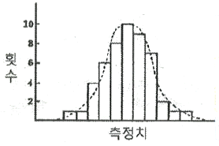
- 유효 분포
- 정규 분포
- 편차 분포
- 계통적 분포
(정답률: 65%)
9. 센터리스 연삭의 특징으로 틀린 것은?
- 가늘고 긴 가공무릐 연삭에 적합하다.
- 연속자겁을 할 수 있어 대향 생산이 용이하다.
- 키 홈과 같은 긴 홈이 있는 가공물은 연삭이 어렵다.
- 축 방향의 추력이 있으므로 연삭 여유가 커야 한다.
(정답률: 60%)
10. 니켈, 크롬, 망간 등이 함유된 특수강에서 볼 수 있는 현상으로 대기 중에 공냉시키는 것만으로도 마르텐자이트 조직이 생성되어 단단해지는 성질은?
- 공냉성
- 냉각성
- 시효성
- 자경성
(정답률: 68%)
11. 초음파 가공에 대한 설명으로 틀린 것은?
- 부도체는 가공할 수 없다.
- 공구 이외에는 마모부품이 거의 없다.
- 경도가 높고 취성이 큰 공작물도 가공할 수 있다.
- 진동하는 공구에 의한 충격으로 가속된 입자를 이용하여 가공한다.
(정답률: 76%)
12. 지름 91MM의 강봉을 회전수 700RPM으로 선삭하는데 절삭저항의 주분력이 735.75n일 때 소요동력은 약 몇 kW인가? (단, 기계 효율은 80%이다.)
- 3.03
- 4.17
- 6.56
- 8.17
(정답률: 30%)
13. 정밀입자가공에서 입도가 작고 연한 숫돌에 적은 압력으로 가압하면서 진동을 주고 가공물에 이송을 주면서 표면을 정밀하게 다듬질하는 가공법은?
- 래핑
- 호닝
- 숏 피닝
- 슈퍼피니싱
(정답률: 81%)
14. 다음 중 센터 등을 사용하지 않고 연삭할 수 있으며, 가늘고 긴 가공물의 연삭을 하는데 적합한 연삭기는?
- 내면 연삭기
- 외경 연삭기
- 평면 연삭기
- 센터리스 연삭기
(정답률: 85%)
15. 방전가공에서 측전기법에 관한 설명으로 틀린 것은?
- 가공속도가 느리다.
- 가공액으로는 변압기유나 휘발유 혹은 모빌유를 사용한다.
- 전원전압이 높으면 다듬질면이 거칠어 구명정도(精度)가 나빠진다.
- 축전기의 용량이 클수록 가공능률은 높지만, 가공정도(精度)가 저하된다.
(정답률: 57%)
16. 어미자의 최소눈금이 0.5mm, 어미자의 눈금 12mm를 25등분한 버니어 캘리퍼스의 최소 읽음 값(mm)은?
- 0.02
- 0.03
- 0.04
- 0.⑤
(정답률: 67%)
17. 회전하는 상자에 공작물과 숫동 입자, 공작액, 컴파운드 등을 함께 넣어 공작물이 입자와 충돌하는 동안에 그 표면의 요철을 제거하며 매끈한 가공면을 얻는 가공법은?
- 숏 피닝
- 배럴 가공
- 전해 가공
- 초음파 가공
(정답률: 64%)
18. 산소 용기에 저장하는 산소는 몇 도의 온도에서 150기압으로 압축하여 충전하는가?
- 5℃
- 15℃
- 35℃
- 55℃
(정답률: 60%)
19. 전기저항 용접에서 발생열량 Q(cal)을 구하는 식으로 옳은 것은? (단, I:전류(A), R: 저항(Ω), t: 시간(sec)이다.)
- Q=0.124I2Rt
- Q=0.238I2Rt
- Q=0.348I2Rt
- Q=0.424I2Rt
(정답률: 80%)
20. 기계 재료에서 소성과 반대되는 성질로 재료에 외력을 가한 후 힘을 제거하면 본래의 형상으로 되돌아오는 기계적 성질은?
- 연성(ductility)
- 탄성(elasticity)
- 가소성(plasticity)
- 가단성(malleability)
(정답률: 84%)
2과목: 재료역학
21. 길이가 ℓ인 양단고정보의 중앙에 집중하중 P를 받고 있을 때, C점에서의 굽힘모멘트 Mc는?
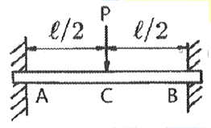
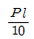
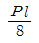
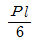
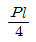
(정답률: 43%)
22. 폭 b가 일정하고 길이가 L인 4각형 단면 외팔보의 자유단에 집중하중 P가 작용하고 있다. 외팔보 내부의 최대굽힘응력을 균일하게 유지하기 위한 보의 높이 h를 벽으로부터의 거리 x에 대한 함수로 옳게 나타낸 것은? (단, 여기서 C는 상수이다.)
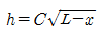
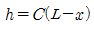
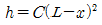
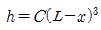
(정답률: 35%)
23. 포와송 비를 v, 전단탄성계수를 G라 할 때, 세로탄성계수 E를 나타내는 식은?
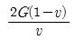
- 2G(1-v)
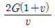
- 2G(1+v)
(정답률: 64%)
24. 그림과 같이 길이가 다르고 지름이 같은 동일재질의 강봉에 강체로 된 보가 달려 있다. 이보가 힘 P를 받아도 힘을 받기 전과 동일하게 수평을 유지하고 있을 때 강봉 AB에 작용하는 힘은 CD에 작용하는 힘의 몇 배가 되는가?
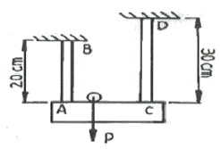
- 2.25배
- 1.67배
- 1.50배
- 1.25배
(정답률: 60%)
25. 길이가 I인 외팔보에 균일분포 하중 w가 작용하고 있을 때 최대 처짐량은? (단, 보의 굽힘 강성 EI는 일정하고, 자중은 무시한다.)
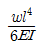
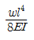
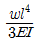
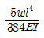
(정답률: 44%)
26. 그림과 같이 양단에서 모멘트가 작용할 경우 A지점의 처짐각 θA는? (단, 보의 굽힘 강성 EI는 일정하고, 자중은 무시한다.)
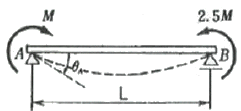
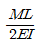
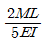
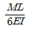
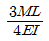
(정답률: 20%)
27. 약 50kW의 동력을 초당 10회전으로 전달하려고 한다. 이 때 축에 작용하는 토크(NㆍM)는 약 얼마인가?
- 200 NㆍM
- 400 NㆍM
- 600 NㆍM
- 800 NㆍM
(정답률: 35%)
28. 그림과 같은 균일 단면 단순보의 일부에 균일분포하중이 작용할 때 중앙점 C에서의 굽힘모멘트는 약 몇 kNㆍm인가? (단, 굽힘 강성 EI는 일정ㅇ하고, 보의 자중은 무시한다.)
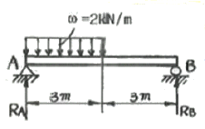
- 5
- 4.5
- 4
- 3.5
(정답률: 41%)
29. 속이 찬 원형축을 비틀 때 다음 중 어느 경우가 가장 비틀기 어려운가? (단, G는 재료의 전단탄성개수이며, 비틀림 각도와 축의 길이는 일정하다.)
- 축 지름이 크고, G의 값이 작을수록 어렵다.
- 축 지름이 작고, G의 값이 클수록 어렵다.
- 축 지름이 크고, G의 값이 클수록 어렵다.
- 축 지름이 작고, G의 값이 작을수록 어렵다.
(정답률: 56%)
30. 지름 10cm, 길이 1.2m의 둥근 막대의 일단을 고정하고 자유단을 10° 비틀었다고 하면, 막대에 생기는 최대전단응력은 약 몇 MPa인가? (단, 막대의 전다난성계수 G=8.4 GPa이다.)
- 81
- 71
- 61
- 41
(정답률: 35%)
31. 양단 회전 기둥과 일단고정 타단자유 기둥의 좌굴하중을 각각 P1, 및 P2라 하면 이들의 비 P2/P1는 얼마인가? (단, 재질, 길이(L), 단면 형상 조건은 모두 동일하다고 가정한다.)
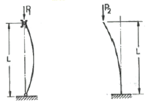
- 1/3
- 1/4
- 1/8
- 1/2
(정답률: 57%)
32. 폭이 3cm 이고, 높이가 4cm 인 직사각형 단면보에 수직방향으로 전단력이 800N 작용할 때 이 보 속의 최대전단응력은 몇 MPa 인가?
- 0.7 MPa
- 1.0 MPa
- 1.3 MPa
- 1.6 MPa
(정답률: 53%)
33. 그림과 같은 두 개의 판재가 볼트로 체결된 채 500N의 인장력을 받고 있다. 볼트의 중간단면에 작용하는 전단응력은?(오류 신고가 접수된 문제입니다. 반드시 정답과 해설을 확인하시기 바랍니다.)
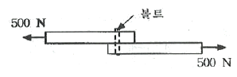
- 5.25 MPa
- 6.37 MPa
- 7.43 MPa
- 8.76 MPa
(정답률: 53%)
34. 그림과 같이 수평 강체봉 AB의 한쪽을 벽에 힌지로 연결하고 죄임봉 CD로 매단 구조물이 있다. 죄임봉의 단면적은 1cm2, 허용 인장응력은 100MPa 일 때 B단의 최대 안전하중은 P는 몇 kN인가?
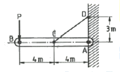
- 3
- 3.75
- 6
- 8.33
(정답률: 26%)
35. 그림과 같은 단면의 x축에 대한 단면 2차 모멘트는?
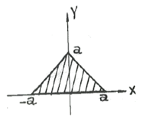
- a4
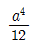
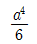
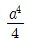
(정답률: 32%)
36. 안지름이 2m이고 1000kPa 내압이 작용하는 원통형 압력 용기의 최대 사용응력이 200MPa이다. 용기의 두께는 약 몇 mm인가? (단, 안전계수는 2이다.)
- 5
- 7.5
- 10
- 12.5
(정답률: 12%)
37. 15℃에서 양단을 고정한 둥근 막대에 발생하는 열응력이 85MPa을 넘지 않도록 하려고 할 때 온도의 허용범위는? (단, 재료의 세로탄성계수는 210GPa, 열팽창계수는 11.5×10-6/K이다.)
- -9.5℃ ~ 39.5℃
- -20.0℃ ~ 50.2℃
- -33.2℃ ~ 63.2℃
- -41.9℃ ~ 71.9℃
(정답률: 67%)
38. 평면 응력상태에서 σx=1000MPa, σy=50MPa일 때 x방향과 y방행의 변형률 Ex, Ey는 약 얼마인가? (단, 이재료의 세로탄성계수는 210GPa, 포와송 비 v=0.3이다.)
- Ex=200×10-6, Ey=46×10-6
- Ex=4⑤×10-6, Ey=95×10-6
- Ex=4⑤×10-6, Ey=4⑤×10-6
- Ex=808×10-6, Ey=190×10-6
(정답률: 50%)
39. 그림과 같이 균일 분포하중을 받고 있는 돌출봉의 굽힘모멘트 선도(BMD)는?
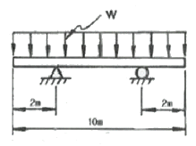
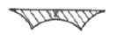
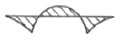
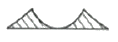
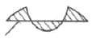
(정답률: 64%)
40. 공학적 변형률(engineering stain) e와 진병형률(true strain) ε사이의 관계식으로 맞는 것은?
- ε = In(e+1)
- ε = e×In(e)
- ε = In(e)
- ε = 3e
(정답률: 73%)
3과목: 용접야금
41. 후판의 용접비드 중심부에서의 주상정(柱狀晶)에 관한 설명 중 틀린 것은?
- 용접속도가 클수록 주상정은 용접방향으로 굽힌다.
- 용접비드 두께가 클수록 주상정은 직립(直立)에 가깝다.
- 용접비드 전체 두께가 작을수록 주상정은 용접방향으로 굽힌다.
- 알루미늄과 같이 온도 확산율이 큰 재료에서는 주상정은 수평방향에 가까워진다.
(정답률: 46%)
42. Fe - Fe3C 평형상태도에서 나타나지 않는 변태점은?
- 포석점
- 포정점
- 공석점
- 공정점
(정답률: 48%)
43. 스테인리스강(18Cr-8Ni) 용접에서 가장 잘 나타나는 용접결함은?
- 루트 크랙(root crack)
- 웰드 디케이(weld decay)
- 세로 균열(longitudinal crack)
- 언더 비드 균열(under bred crack)
(정답률: 77%)
44. 결정격자 결함 중 면결함에 해당되는 것은?
- 공동(Void)
- 공공(Vacancy)
- 전위(Dislocation)
- 적층결함(Stacking fault)
(정답률: 73%)
45. 탄소강에서 적열메짐의 원인이 되는 원소는?
- S
- P
- Si
- Cu
(정답률: 84%)
46. 스테인리스강의 입계부식 방지법에 해당되지 않는 것은?
- 탄소량을 0.03% 이하로 낮게 한다.
- 질산염, 크롬산염 등 부동태화제를 가한다.
- C와의 친화력이 Cr보다 큰 Ti, Nb 또는 Ta를 첨가해서 안정화시킨다.
- 1000~1150℃로 가열하려 탄화물을 고용시킨 후 급랭하는 고용화 열처리를 한다.
(정답률: 27%)
47. 공석강의 조직으로 옳은 것은?
- 페라이트
- 펄라이트
- 펄라이트와 레데뷰라이트의 혼합조직
- 페라이트와 오스테나이트의 혼합조직
(정답률: 30%)
48. 압력이 일정한 금속계에서 상이 평형을 유지하기 위한 자유도의 식으로 옳은 것은? (단, F: 자유도, n: 성분수, P: 상의수이다.)
- F = n-1-p
- F = n+1+p
- F = n+1-p
- F = n-1+p
(정답률: 77%)
49. Al-Cu-Ni-Mg계 합금으로 강도 내열성이 우수하고 고온강도가 크므로 공냉 실린더 헤드, 내연 기과용 피스톤 등에 이용되는 합금은?
- Y합금
- 두랄루민
- 라우탈(Lautal)
- 도우메탈(Dow metal)
(정답률: 66%)
50. 용접부의 저온균열에 대한 설명으로 옳은 것은?
- 저온균열은 수소의 영향이 거의 없다.
- 저온균열은 용접금속부에서 생기고 조립화열영향부에서는 거의 생기지 않는다.
- 용접홈의 모양이나 용접봉의 종류는 저온균열에 영향을 미치지 않는다.
- 저온균열은 냉각조건에 따라 마텐자이트 변태나 잔류오스테나이트에 의한 취성화가 원인이다.
(정답률: 77%)
51. 저온균열은 냉각조건에 따라 마텐자이트 변태나 잔류오스테나이트에 의한 취성화가 원인이다. 강을 오스테나이트 구역에서 담금질(수랭)하여 최종으로 얻을 수 있는 조직은?
- 펄라이트
- 마텐자이트
- 시멘타이트
- 오스테나이트
(정답률: 76%)
52. 강의 열처리에서 A1, 변태점 이하로 가열하여 소정시간 유지한 다음 냉각하는 방법으로 인성이 증가되는 열처리 방법은?
- 퀜칭
- 템퍼링
- 어닐링
- 노멀라이징
(정답률: 38%)
53. 항온변태곡선과 구별하기 위한 연속냉각곡선을 의미하는 것은?
- IT곡선
- TTT곡선
- CTT곡선
- CCT곡선
(정답률: 66%)
54. 탄소강에 함유되어 잇는 구리(Cu)의 영향이 아닌 것은?
- 내식성을 향상시킨다.
- Ar1 변태점을 저하시킨다.
- 강도 및 경도를 낮춘다.
- 탄성한도를 증가시킨다.
(정답률: 75%)
55. 비중이 작은 것에서 큰 순서대로 내열된 것은?
- Al < Sn < Cu < Pb
- Sn < Cu < Pb < Al
- Cu < Pb < Al < Sn
- Pb < Cu < Sn < Al
(정답률: 89%)
56. 초경합금의 특성으로 옳은 것은?
- 마모성이 좋다.
- 압축강도가 낮다.
- 경도가 높고 변경이 적다.
- 고온 경도 및 강도가 낮다.
(정답률: 75%)
57. 용접 후 열처리 목적이 아닌 것은?
- 균열감수성 증가
- 함유가스의 제거
- 용접잔류응력의 완화
- 용접 열영향부의 연화
(정답률: 83%)
58. 액체 금속이 응고할 때 융점의 온도에서 응고가 시작되지 않고 융점보다 낮은 온도에서 응고가 되는 현상은?
- 수냉각
- 과냉각
- 시효냉각
- 체결냉각
(정답률: 63%)
59. 용융 금속 중에 산소에 대한 친화력이 Fe보다 큰 원소를 첨가하면 산소와 반응하여 생성물이 발생하는 반응은?
- 단정반응
- 탈인반응
- 표층반응
- 탈산반응
(정답률: 92%)
60. 용착금속 내에 유황편석에 의한 크랙을 방지하기 위한 가장 적합한 방법은?
- 자동용접을 실시한다.
- 플럭스를 사용하지 않는다.
- 용점 모래로 림드강 강판을 사용한다.
- 용착금속 내에 수소가 흡수되지 않도록 한다.
(정답률: 76%)
4과목: 용접구조설계
61. 자분탐상 검사를 실시하기에 가장 적합한 금속은?
- Zn
- Cu
- Ni
- Si
(정답률: 53%)
62. 용접변형의 종류 중에서 면내 변형에 속하지 않는 것은?
- 회전 변형
- 좌굴 변형
- 회 수축 변형
- 종 수축 변형
(정답률: 60%)
63. 첫층에서 루트 근방의 열 영향부에 발생하여 점차 비드 속으로 성장해 들어가는 세로균열의 일종으로 용접부에 함유된 수소량이나 잔류응력 등의 원인으로 발생하는 결함은?
- 설퍼 균열
- 루트 균열
- 라멜라티어
- 큐레이터 균열
(정답률: 63%)
64. 용접구조물을 설계할 때 부분 조립의 활용 및 용접요령에 대한 설명 중 틀린 것은?
- 최종 조립 전에 응력제거가 필요한 부분은 응력제거를 한다.
- 작업 중 수시로 검사하거나 잘못된 부분을 교정해서는 안된다.
- 부분 조립과 가용접을 완전하게 하여 용접 후의 변형과 내부응력을 줄인다.
- 구조물이 대형이거나 복잡할 때 여러 사람이 동시에 작업할 수 있게 작업을 분산시켜 동시에 작업할 수 있게 한다.
(정답률: 90%)
65. E4316 피복 아크 용접봉의 건조 온도와 건조 시간을 ㄴ타낸 것으로 가장 적합한 것은?
- 80 ~ 120℃, 1시간 정도
- 150 ~ 200℃, 2시간 정도
- 300 ~ 350℃, 1시간 정도
- 400 ~ 480℃, 2시간 정도
(정답률: 80%)
66. 강판의 두께 15mm, 폭 100mm의 v형 홈을 맞대기 용접이음 할 때 이음효율을 80%로 하면 인장하중은 얼마인가? (단, 강판의 최저 인장강도는 40kgf/mm2, 안전율은 4, 용접부는 불용착부가 없는 완전 용입의 이음부이다.)
- 12000 kgf
- 15000 kgf
- 18000 kgf
- 20000 kgf
(정답률: 39%)
67. 용접을 진행하는 용접부의 부근을 냉각시켜 열영향부의 넓이를 축소시킴으로써 변형을 방지하는 냉각법의 종류에 해당되지 않는 것은?
- 살수법
- 비석법
- 석면포 사용법
- 수냉 동판 사용법
(정답률: 71%)
68. 용접 이음부의 형태를 설계할 때 고려항 사항 중 틀린 것은?
- 용입이 깊은 용접법을 선택할 것
- 적당한 루트 간격과 홈각도르 선택할 것
- 용착 금속량이 적게 드는 이음 모양이 되도록 할 것
- 후판용접에서는 양면 V면보다 한 면 V형 홈을 이용하여 용착 금속량을 많게 할 것
(정답률: 100%)
69. 강판의 두께 20mm, 길이 3m를 V형 홈으로 맞대기용접 이음을 하고자 한다. 이 용접부에 사용될 용접봉의 사용량은 약 몇 kgf 인가? (단, 용착 금속의 비중은 7.85, 용착효율은 65%, V형 홈 용접부 단면적은 2.9cm2로 한다.)
- 7.5
- 10.5
- 17.6
- 27.3
(정답률: 34%)
70. 다음 중 용접부 표면의 미소한 균열이나 작은 구멍들을 신속하고 쉽게 검출하는 방법으로 철 및 비자성 재료에 많이 이용되는 시험법은?
- 누설 검사
- 침투 탐상 검사
- 초음파 탐상 검사
- 방사선 투과 검사
(정답률: 79%)
71. 용접이음의 강도와 파괴에서 시간 의존성 파괴가 아닌 것은?
- 피로
- 크리프
- 취성 파괴
- 응력 부식 균열
(정답률: 56%)
72. 피복 아크 용접에서 아크 전류 300A, 아크 전압 30V, 용접속도 10cm/min 일 때 용접의 단위길이 1cm 당 발생하는 용접 입열은 약 몇 Joule/cm 인가?
- 540
- 5400
- 54000
- 540000
(정답률: 83%)
73. 용접법 중 압접에 해당하는 것은?
- 저항용접
- 피복 아크 용접
- 산소-아세틸렌 용접
- 서브머지드 아크 용접
(정답률: 97%)
74. [그림]과 같이 필릿 용접부를 해머나 프레스로 굽혀 파단시켜 용입부족이나 결함을 검사하는 시험법을 무엇이라고 하는가?
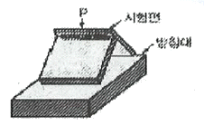
- 충격 시험
- 파단 시험
- 마이크로 시험
- 반데어비인 시험
(정답률: 88%)
75. 맞대기 용접에서 용접금속 및 모재의 수축에 대하여 용접 전에 반대방향으로 굽혀 놓고 작업하는 용접 변형 방지 방법은?
- 억제법
- 도열법
- 피닝법
- 역변형법
(정답률: 85%)
76. 다음 용접 홈의 형상 중 가장 얇은 판에 사용되는 것은?
- I형 홈
- V형 홈
- X형 홈
- U형 홈
(정답률: 72%)
77. 방사선 투과검사에서 방사선원으로 사용되지 않는 것은?
- Co 60
- Cs 137
- Be 121
- Ir 192
(정답률: 59%)
78. 용접이음 설계 시 주의사항으로 틀린 것은?
- 용접 이음을 한 한 군데로 집중시키지 않는다.
- 용접작업에 지장을 주지 않도록 공간을 두어야 한다.
- 될 수 있는 한 필릿용접은 피하고, 맞대기용접을 한다.
- 판 두께가 다른 경우, 이음부는 단면의 변화를 주지 않는다.
(정답률: 72%)
79. 용착금속 중에 함유된 수소함유량 측정법으로 사용되는 것은?
- 글리세린 치환법
- 킨젤 시험법
- 코메럴 시험법
- 피크린산 시험법
(정답률: 58%)
80. 용접 이음성능에 영향을 주는 요소로서 고온의 분위기에서 용접이음이 사용될 경우에 발생되는 현상은?
- 크리프 현상
- 스캘롭 현상
- 상온특성 현상
- 저온특성 현상
(정답률: 58%)
5과목: 용접일반 및 안전관리
81. 압력조정기의 구비 조건으로 틀린 것은?
- 동작이 예민해야 한다.
- 빙결되지 않아야 한다.
- 조정압력과 방출압력과의 차이가 커야 한다.
- 조정압력은 용기 내의 가스량이 변화하여도 항상 일정해야 한다.
(정답률: 80%)
82. 안전ㆍ보건표지의 색체에서 지시표지에 사용되는 색은?
- 노란색
- 파란색
- 검정색
- 빨간색
(정답률: 74%)
83. 용접 균열 시험에서 고온균열을 측정하기 위한 균열 시험법은?
- 킨젤 시험
- 코머렐 시험
- 리하이 시험
- 피스코 균열 시험
(정답률: 50%)
84. 다음 가연성 가스 중 공기보다 무거운 가스는?
- 수소
- 메탄
- 프로판
- 아세틸렌
(정답률: 75%)
85. 동(Cu)용접이 철강용접에 비해 어려운 이유로 틀린 것은?
- 용접부에 기공이 쉽게 발생한다.
- 열전도율이 높고 냉각속도가 작다.
- 산화동을 포함하면 균열이 생긴다.
- 산화동을 포함하면 융점이 낮아진다.
(정답률: 55%)
86. 용접법에 대한 설명으로 틀린 것은?
- 초음파용접 - 초음파 주파수로 진동을 주어 진동에너지에 의한 마찰열로 압접하는 방법
- 마찰용접 - 높은 진공 중에서 전자류가 가지고 있는 에너지를 용접열원으로 압접하는 방법
- 냉간용접 - 상온에서 강하게 압축함으로써 경계면을 국부적으로 소성 변형시켜 압접하는 방법
- 가스압접 - 접합부를 재결정온도 이상을 가열하여 축방향으로 압축력을 가하여 압접하는 방법
(정답률: 70%)
87. 용접작업 중 흄(fume) 가스 중독을 방지하기 위한 방법으로 틀린 것은?
- 흄 전동 회수장치를 설치한다.
- 작업장 내 환기장치를 한다.
- 실외 용접작업 시 바람을 등지고 작업한다.
- 환기가 되면 방독마스크를 착용하지 않아도 된다.
(정답률: 80%)
88. 피복 아크 용접에서 직류 정극성(DCSP)의 설명으로 틀린 것은?
- 양극에서 발열이 크다.
- 모재 쪽에 양극(+)을 연결한다.
- 모재의 용입이 역극성에 비해 깊다.
- 용접봉의 녹음이 역극성에 비해 빠르다.
(정답률: 74%)
89. 다음 중 플라즈마 아크의 종류가 아닌 것은?
- 용적시 아크
- 이행형 아크
- 중간형 아크
- 비이행형 아크
(정답률: 43%)
90. 가스 정단에서 드래그(drag)를 나타내는 식으로 옳은 것은?
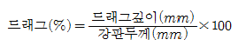
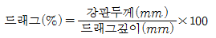
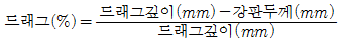
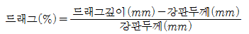
(정답률: 61%)
91. 서브머지드 아크 용접에 관한 설명으로 틀린 것은?
- 다전극 용접기는 탠덤식, 횡병렬식, 횡직렬식 등이 있다.
- 와이어 송급장치, 제어장치, 용제 호퍼, 콘텍트 팁을 일괄하여 용접헤드(weldinghead)라 한다.
- 용융형 용제는 합금원소를 첨가하므로 충격치가 요구되는 저합금강 덧살 붙임 용접에 적합하다.
- 용접 홈의 루트 간격은 고전류로 용접을 하므로 용략 방지를 위하여 받침쇠가 없는 경우 0.8mm 이하이어야 한다.
(정답률: 57%)
92. 교류아크 용접기의 1차 전압이 220V, 정격 2차 전류가 240A, 정격사용률 40%, 아크전압 35V일 때 용접전류 200A로 용접작업을 할 경우 허용사용률은 약 몇 %인가?
- 48
- 57.6
- 83.3
- 228.6
(정답률: 37%)
93. 피복 아크용접보다 강한 전류를 사용하여, 연강, 특수강 및 일부비철금속 등의 두꺼운 판도 단층으로 용접할 수 있는 것은? (단, 용제와 와이어가 분리 공급되고, 아크는 용제 속에서 발생)
- TIG용접
- MIG용접
- 탄산가스아크 용접
- 서브머지드아크 용접
(정답률: 73%)
94. 용접작업 중 환기장치의 필요성이 가장 낮은 것은?
- 아연도금 재료의 용접
- 교량공사의 구조물 용접
- 불화물 용제를 사용한 용접
- 밀폐된 용기 내의 보수용접
(정답률: 96%)
95. 피복 아크 용접 시 용접기의 1차 입력이 25kVA일 때 용접기의 1차 측에 설치할 안전 스위치에 몇 A의 퓨즈를 붙이는 것이 가장 적합한가? (단, 이 용접기의 입력 전압은 200V이다.)
- 80A
- 100A
- 125A
- 150A
(정답률: 83%)
96. 피복 아크 용접에서 용착금속을 보호하는 방식이 아닌 것은?
- gas shield type
- slag shield type
- spatter shield type
- semi shield type
(정답률: 63%)
97. 가스용접에서 사용되는 아세틸렌가스의 폭발을 일으키는 물질과 가장 거리가 먼 것은?
- 구리
- 압력
- 산소
- 아세톤
(정답률: 48%)
98. 이음 현상에 따른 저항용접의 분류 중 겹치기 이음이 아닌 것은?
- spot 용접
- seam 용접
- projection 용접
- percussion 용접
(정답률: 41%)
99. 교류 아크 용접기에 해당되지 않는 것은?
- 정류기형
- 탭 전환형
- 가동 코일형
- 가포화 리액터형
(정답률: 81%)
100. 다음 중 염기도가 가장 높은 용접봉은?
- 티탄계
- 저수조계
- 고산화티탄계
- 고셀룰로스계
(정답률: 57%)